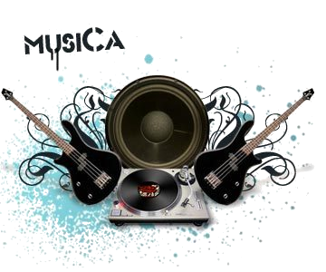

Conheça um dos instrumentos musicais que vieram direto do futuro! Se você curte música e tecnologia, em algum momento da vida já sonhou em pegar uma carona no Delorean, pilotado por Marty Mcfly, só pra ver como são os instrumentos musicais do futuro. Mas não se preocupe, amigo leitor! O futuro já começou e o instrumento abaixo deixa bem claro que os tempos vindouros chegaram num piscar de olhos!

Roli Seaboard – Teclas no comando!
Desenvolvido pela fabricante britânica ROLI, o instrumento parece um teclado comum. Carinhosamente chamado de “piano do futuro”, o brinquedinho é um vigoroso sintetizador e controlador. De acordo com o site Tecmundo, as teclas são configuradas, via software, para reproduzirem os mais diferentes tipos de áudios possíveis. É possível fazer solos de guitarra, dedilhado de violão, produzir efeitos sonoros e até orquestrações!